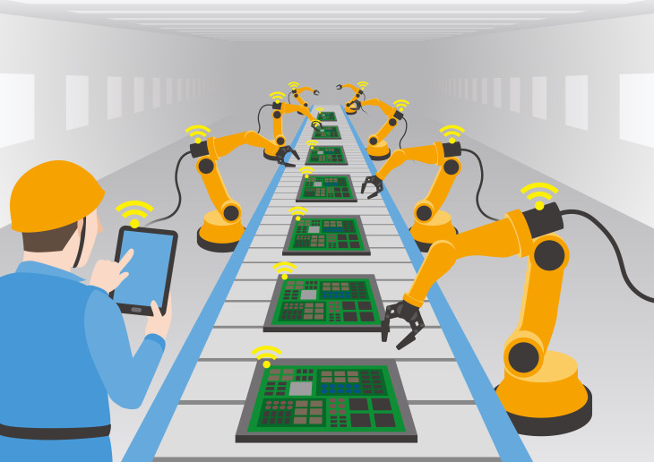

Veille Technologique sur l'Intelligence Artificielle et de l'Automatisation des emplois
Problématique :
"Comment l'IA transforme-t-elle le marché du travail et quelles sont les conséquences pour l'emploi dans différents secteurs ?"
Objectifs de la veille :
- Suivre les tendances de l'automatisation grâce à l'IA dans différents secteurs.
- Analyser l'évolution des métiers et de l'emploi face à l'intelligence artificielle.
- Explorer les implications éthiques, économiques et sociales de l'automatisation.
- Mettre en évidence les stratégies d'adaptation des entreprises et des gouvernements.
Définition des mots clés :
- Automatisation : Utilisation de technologies, notamment l'IA, pour effectuer des tâches qui étaient précédemment réalisées par des humains.
- Intelligence Artificielle (IA) : Technologie qui permet à des machines d'apprendre, de s'adapter et de résoudre des problèmes de manière autonome.
- Marché du travail : Environnement économique où l'offre de travail rencontre la demande d'emploi.
- Résilience du travail : Capacité du marché du travail à s'adapter et à évoluer face aux ruptures technologiques.
- Création de nouveaux métiers : Émergence de nouvelles professions et compétences liées à l'IA et à l'automatisation.
Identification du besoin :
Les entreprises et les gouvernements ont besoin de solutions pour :
- Adopter l'IA tout en minimisant les pertes d'emplois.
- Former et reconvertir les travailleurs afin qu'ils puissent s'adapter aux nouvelles compétences requises.
- Assurer une redistribution équitable des bénéfices de l'automatisation pour réduire les inégalités sociales et économiques.
- Suivre les tendances et anticiper les impacts sur les secteurs les plus vulnérables.

Statistiques sur l'impact de l'IA :
- Automatisation des emplois : Selon un rapport de McKinsey, jusqu'à 800 millions de travailleurs
dans le monde pourraient perdre leur emploi en raison de l'automatisation d'ici 2030.
Source : McKinsey
- Transformation des compétences : Une étude de PwC estime que 60% des travailleurs devront développer de nouvelles compétences pour s'adapter aux évolutions technologiques d'ici 2030.
Source : PwC
- Création de nouveaux secteurs : Selon le Forum économique mondial, des secteurs comme la cybersécurité, l'IA et la robotique devraient générer plus de 97 millions de nouveaux emplois d'ici 2025.
Source : Mercato-emploi
- Inégalités économiques : Une étude de l'OCDE montre que les travailleurs peu qualifiés et les régions rurales seront les plus vulnérables à l'automatisation.
Source : OCDE
Informations importantes :
A. Impact sur l'industrie manufacturière :
Les robots et les systèmes d'IA remplaçant certaines tâches manuelles peuvent entraîner une diminution des emplois dans certaines industries, mais cela crée aussi des opportunités dans la maintenance des robots et l'optimisation des processus.
Source : McKinsey & Company - L'impact de l'IA sur l'industrie
B. Adaptation des entreprises et reconversion des travailleurs :
Les entreprises investissent dans la formation des employés et les reconversions pour répondre aux défis liés à l'IA et à l'automatisation.
Source : PwC - Stratégies d'adaptation face à l'IA
C. Nouvelles opportunités économiques :
Les secteurs émergents, tels que l'intelligence artificielle, les technologies financières et la cybersécurité, connaissent une forte demande de professionnels qualifiés.
Source : World Economic Forum - Les opportunités économiques liées à l'IA
Conclusion :
L'IA est en train de transformer le marché du travail en automatisant de nombreuses tâches et
en créant de nouveaux métiers. Les entreprises et les gouvernements doivent anticiper ces changements pour assurer
une transition équitable et une adaptation réussie des travailleurs. La veille technologique sur l'IA permet de
suivre les tendances et d'identifier les opportunités et les défis liés à l'automatisation.